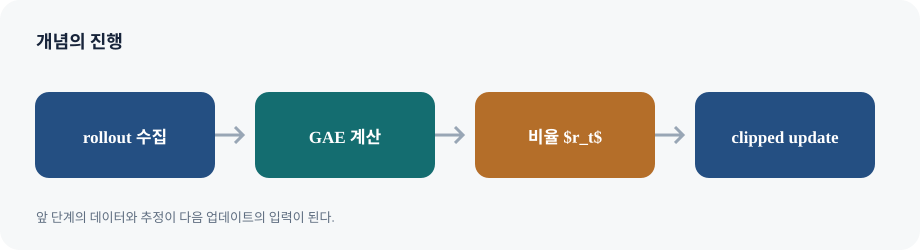

N-step 반환은 일부 실제 보상을 더한 뒤 마지막 상태가치로 bootstrap한다. \(n\)이 길어지면 bootstrap 편향은 줄어드는 경향이 있지만 Monte Carlo에 가까워져 분산이 커진다. Generalized Advantage Estimation(GAE)은 TD 잔차 \(\delta_t=r_t+\gamma V(s_{t+1})-V(s_t)\)의 지수 가중합으로 이 절충을 제어한다.
\(\lambda=0\)이면 한 단계 TD 잔차에 가깝고, \(\lambda=1\)이면 종료까지 잔차를 합쳐 Monte Carlo advantage와 연결된다(terminal 처리와 가치 근사 가정하에서). \(\lambda\)는 단순한 성능 상수가 아니라 bias–variance 절충을 조절한다.
PPO는 수집 정책과 현재 정책의 확률비 \(r_t( heta)=\pi_ heta(a_t\mid s_t)/\pi_{old}(a_t\mid s_t)\)를 계산하고 clipped surrogate
를 최대화한다. \(\hat A>0\)일 때 확률비를 너무 크게 올리는 이득을 자르고, \(\hat A<0\)일 때 너무 작게 내리는 이득을 잘라 한 번의 업데이트가 과도하게 멀어지는 것을 억제한다. 이것은 정책변화를 엄밀히 제한하는 hard constraint가 아니며, clipping만으로 학습이 안정하다고 보장되지 않는다. 가치 손실·엔트로피 보너스·정규화·batch 구성과 rollout 길이도 함께 영향을 준다.
기존 on-policy 방법은 정책을 바꾸면 수집 자료가 현재 정책의 분포와 어긋난다. PPO는 하나의 rollout batch로 여러 minibatch epoch를 허용하되, 새 정책이 수집 정책에서 과도하게 벗어날 때 목적함수의 추가 이득을 제한한다.
N-step과 GAE 유도
N-step target은 \(r_t+\gamma r_{t+1}+\cdots+\gamma^{n-1}r_{t+n-1}+\gamma^nV(s_{t+n})\)이다. 각 n-step 추정의 혼합은 TD 잔차의 가중합으로 정리된다. 경계에서 terminal이면 bootstrap을 끄고, time-limit truncation이면 실제 task 종료인지 구분한다.
Importance sampling
옛 정책에서 뽑은 행동의 새 정책 기대값은 확률비로 재가중할 수 있다. 비율의 곱은 시간 길이에 따라 분산이 폭증할 수 있고, 데이터에서 드문 행동의 가중치가 매우 커질 수 있다. PPO는 이를 실용적으로 완화하지만 전체 trajectory importance sampling을 정확히 수행하는 것은 아니다.
PPO clipped objective
확률비와 advantage 부호를 각각 놓고 min·clip이 어느 항을 선택하는지 확인한다. clip은 gradient 이득을 평평하게 만드는 surrogate clipping이지 새 확률분포를 clip하는 연산이 아니다. 작은 \(\epsilon\)이 항상 좋지는 않으며 업데이트가 지나치게 보수적일 수 있다.
응용과 알고리즘 맥락
로봇 조립·보행·언어모델 선호 최적화는 PPO가 쓰인 사례지만, 사례의 성공을 알고리즘만의 공으로 해석하면 안 된다. 보상 설계, 시뮬레이터, 데이터, 정책 구조와 안전 제약이 함께 작동한다. PPO는 단순하고 튼튼한 기본선이지만 sample-efficient하다는 뜻은 아니다.
표지에서 이 강의의 주제를 확인하고, 뒤따르는 예시가 어떤 의사결정 문제를 설명하는지 질문을 세워 둡니다.
개념 전개 펼치기
기존 on-policy 방법은 정책을 바꾸면 수집 자료가 현재 정책의 분포와 어긋난다. PPO는 하나의 rollout batch로 여러 minibatch epoch를 허용하되, 새 정책이 수집 정책에서 과도하게 벗어날 때 목적함수의 추가 이득을 제한한다.
03-2 / 02
Plan for today
슬라이드 02
Actor–critic과 표본 재사용 · 슬라이드 02
오늘의 목차는 개념의 순서를 보여 줍니다. 각 항목을 읽을 때 앞에서 배운 도구가 다음 알고리즘의 어떤 약점을 해결하는지 연결합니다.
개념 전개 펼치기
기존 on-policy 방법은 정책을 바꾸면 수집 자료가 현재 정책의 분포와 어긋난다. PPO는 하나의 rollout batch로 여러 minibatch epoch를 허용하되, 새 정책이 수집 정책에서 과도하게 벗어날 때 목적함수의 추가 이득을 제한한다.
03-2 / 03
Summary of reducing variance of policy gradient
슬라이드 03
Actor–critic과 표본 재사용 · 슬라이드 03
요약의 항목을 정의·목적함수·데이터 요구량·주요 실패 원인으로 나누어 정리합니다. 이름이 비슷한 알고리즘의 차이는 이 네 축에서 드러납니다.
개념 전개 펼치기
기존 on-policy 방법은 정책을 바꾸면 수집 자료가 현재 정책의 분포와 어긋난다. PPO는 하나의 rollout batch로 여러 minibatch epoch를 허용하되, 새 정책이 수집 정책에서 과도하게 벗어날 때 목적함수의 추가 이득을 제한한다.
03-2 / 04
REINFORCE
슬라이드 04
Actor–critic과 표본 재사용 · 슬라이드 04
슬라이드의 정의와 그림을 바로 앞·뒤 페이지의 식과 연결합니다. 기호의 조건부 대상, 학습 데이터가 온 정책, 그리고 업데이트에서 고정된 값이 무엇인지 표시해 보세요.
개념 전개 펼치기
기존 on-policy 방법은 정책을 바꾸면 수집 자료가 현재 정책의 분포와 어긋난다. PPO는 하나의 rollout batch로 여러 minibatch epoch를 허용하되, 새 정책이 수집 정책에서 과도하게 벗어날 때 목적함수의 추가 이득을 제한한다.
03-2 / 05
Actor-critic algorithm
슬라이드 05
Actor–critic과 표본 재사용 · 슬라이드 05
슬라이드의 정의와 그림을 바로 앞·뒤 페이지의 식과 연결합니다. 기호의 조건부 대상, 학습 데이터가 온 정책, 그리고 업데이트에서 고정된 값이 무엇인지 표시해 보세요.
개념 전개 펼치기
기존 on-policy 방법은 정책을 바꾸면 수집 자료가 현재 정책의 분포와 어긋난다. PPO는 하나의 rollout batch로 여러 minibatch epoch를 허용하되, 새 정책이 수집 정책에서 과도하게 벗어날 때 목적함수의 추가 이득을 제한한다.

GAE와 Proximal Policy Optimization의 핵심 구조
03-2 / 06
Actor-critic is sample efficient than REINFORCE
슬라이드 06
Actor–critic과 표본 재사용 · 슬라이드 06
슬라이드의 정의와 그림을 바로 앞·뒤 페이지의 식과 연결합니다. 기호의 조건부 대상, 학습 데이터가 온 정책, 그리고 업데이트에서 고정된 값이 무엇인지 표시해 보세요.
개념 전개 펼치기
기존 on-policy 방법은 정책을 바꾸면 수집 자료가 현재 정책의 분포와 어긋난다. PPO는 하나의 rollout batch로 여러 minibatch epoch를 허용하되, 새 정책이 수집 정책에서 과도하게 벗어날 때 목적함수의 추가 이득을 제한한다.
03-2 / 07
Issues in this actor-critic approach
슬라이드 07
N-step과 GAE 유도 · 슬라이드 07
슬라이드의 정의와 그림을 바로 앞·뒤 페이지의 식과 연결합니다. 기호의 조건부 대상, 학습 데이터가 온 정책, 그리고 업데이트에서 고정된 값이 무엇인지 표시해 보세요.
개념 전개 펼치기
N-step target은 \(r_t+\gamma r_{t+1}+\cdots+\gamma^{n-1}r_{t+n-1}+\gamma^nV(s_{t+n})\)이다. 각 n-step 추정의 혼합은 TD 잔차의 가중합으로 정리된다. 경계에서 terminal이면 bootstrap을 끄고, time-limit truncation이면 실제 task 종료인지 구분한다.
03-2 / 08
N-step returns
슬라이드 08
N-step과 GAE 유도 · 슬라이드 08
N-step target은 N개 실제 보상 뒤의 가치 예측으로 bootstrap합니다. N을 늘릴수록 가치 함수 오차의 영향은 늦게 들어오고 반환 표본의 분산은 커지는 경향이 있습니다.
개념 전개 펼치기
N-step target은 \(r_t+\gamma r_{t+1}+\cdots+\gamma^{n-1}r_{t+n-1}+\gamma^nV(s_{t+n})\)이다. 각 n-step 추정의 혼합은 TD 잔차의 가중합으로 정리된다. 경계에서 terminal이면 bootstrap을 끄고, time-limit truncation이면 실제 task 종료인지 구분한다.
03-2 / 09
Generalized advantage estimator (GAE)
슬라이드 09
N-step과 GAE 유도 · 슬라이드 09
GAE는 TD 잔차를 할인 가중합해 여러 지평의 추정을 섞습니다. λ=0은 1-step, λ가 1에 가까우면 긴 Monte Carlo 추정에 가까워집니다.
개념 전개 펼치기
N-step target은 \(r_t+\gamma r_{t+1}+\cdots+\gamma^{n-1}r_{t+n-1}+\gamma^nV(s_{t+n})\)이다. 각 n-step 추정의 혼합은 TD 잔차의 가중합으로 정리된다. 경계에서 terminal이면 bootstrap을 끄고, time-limit truncation이면 실제 task 종료인지 구분한다.
03-2 / 10
Issues in this actor-critic approach
슬라이드 10
N-step과 GAE 유도 · 슬라이드 10
슬라이드의 정의와 그림을 바로 앞·뒤 페이지의 식과 연결합니다. 기호의 조건부 대상, 학습 데이터가 온 정책, 그리고 업데이트에서 고정된 값이 무엇인지 표시해 보세요.
개념 전개 펼치기
N-step target은 \(r_t+\gamma r_{t+1}+\cdots+\gamma^{n-1}r_{t+n-1}+\gamma^nV(s_{t+n})\)이다. 각 n-step 추정의 혼합은 TD 잔차의 가중합으로 정리된다. 경계에서 terminal이면 bootstrap을 끄고, time-limit truncation이면 실제 task 종료인지 구분한다.
03-2 / 11
REINFORCE requires on-policy data
슬라이드 11
Importance sampling · 슬라이드 11
슬라이드의 정의와 그림을 바로 앞·뒤 페이지의 식과 연결합니다. 기호의 조건부 대상, 학습 데이터가 온 정책, 그리고 업데이트에서 고정된 값이 무엇인지 표시해 보세요.
개념 전개 펼치기
옛 정책에서 뽑은 행동의 새 정책 기대값은 확률비로 재가중할 수 있다. 비율의 곱은 시간 길이에 따라 분산이 폭증할 수 있고, 데이터에서 드문 행동의 가중치가 매우 커질 수 있다. PPO는 이를 실용적으로 완화하지만 전체 trajectory importance sampling을 정확히 수행하는 것은 아니다.
03-2 / 12
Can policy gradients use old data?
슬라이드 12
Importance sampling · 슬라이드 12
슬라이드의 정의와 그림을 바로 앞·뒤 페이지의 식과 연결합니다. 기호의 조건부 대상, 학습 데이터가 온 정책, 그리고 업데이트에서 고정된 값이 무엇인지 표시해 보세요.
개념 전개 펼치기
옛 정책에서 뽑은 행동의 새 정책 기대값은 확률비로 재가중할 수 있다. 비율의 곱은 시간 길이에 따라 분산이 폭증할 수 있고, 데이터에서 드문 행동의 가중치가 매우 커질 수 있다. PPO는 이를 실용적으로 완화하지만 전체 trajectory importance sampling을 정확히 수행하는 것은 아니다.
03-2 / 13
Importance sampling for policy gradients
슬라이드 13
Importance sampling · 슬라이드 13
옛 정책의 표본을 재사용하려면 행동 확률비로 새 정책 기대를 보정합니다. 데이터에서 매우 드문 행동은 큰 가중치를 가져 추정 분산을 키울 수 있습니다.
개념 전개 펼치기
옛 정책에서 뽑은 행동의 새 정책 기대값은 확률비로 재가중할 수 있다. 비율의 곱은 시간 길이에 따라 분산이 폭증할 수 있고, 데이터에서 드문 행동의 가중치가 매우 커질 수 있다. PPO는 이를 실용적으로 완화하지만 전체 trajectory importance sampling을 정확히 수행하는 것은 아니다.
03-2 / 14
Actor-critic with importance sampling
슬라이드 14
Importance sampling · 슬라이드 14
옛 정책의 표본을 재사용하려면 행동 확률비로 새 정책 기대를 보정합니다. 데이터에서 매우 드문 행동은 큰 가중치를 가져 추정 분산을 키울 수 있습니다.
개념 전개 펼치기
옛 정책에서 뽑은 행동의 새 정책 기대값은 확률비로 재가중할 수 있다. 비율의 곱은 시간 길이에 따라 분산이 폭증할 수 있고, 데이터에서 드문 행동의 가중치가 매우 커질 수 있다. PPO는 이를 실용적으로 완화하지만 전체 trajectory importance sampling을 정확히 수행하는 것은 아니다.
03-2 / 15
Problem with importance sampling
슬라이드 15
Importance sampling · 슬라이드 15
옛 정책의 표본을 재사용하려면 행동 확률비로 새 정책 기대를 보정합니다. 데이터에서 매우 드문 행동은 큰 가중치를 가져 추정 분산을 키울 수 있습니다.
개념 전개 펼치기
옛 정책에서 뽑은 행동의 새 정책 기대값은 확률비로 재가중할 수 있다. 비율의 곱은 시간 길이에 따라 분산이 폭증할 수 있고, 데이터에서 드문 행동의 가중치가 매우 커질 수 있다. PPO는 이를 실용적으로 완화하지만 전체 trajectory importance sampling을 정확히 수행하는 것은 아니다.
03-2 / 16
Proximal policy optimization (PPO)
슬라이드 16
PPO clipped objective · 슬라이드 16
PPO는 수집 정책과 새 정책의 행동 확률비를 advantage에 곱합니다. min과 clipping은 advantage 부호별로 과도한 확률 변화가 주는 추가 최적화 이득을 억제합니다.
개념 전개 펼치기
확률비와 advantage 부호를 각각 놓고 min·clip이 어느 항을 선택하는지 확인한다. clip은 gradient 이득을 평평하게 만드는 surrogate clipping이지 새 확률분포를 clip하는 연산이 아니다. 작은 \(\epsilon\)이 항상 좋지는 않으며 업데이트가 지나치게 보수적일 수 있다.
03-2 / 17
Proximal policy optimization (PPO)
슬라이드 17
PPO clipped objective · 슬라이드 17
PPO는 수집 정책과 새 정책의 행동 확률비를 advantage에 곱합니다. min과 clipping은 advantage 부호별로 과도한 확률 변화가 주는 추가 최적화 이득을 억제합니다.
개념 전개 펼치기
확률비와 advantage 부호를 각각 놓고 min·clip이 어느 항을 선택하는지 확인한다. clip은 gradient 이득을 평평하게 만드는 surrogate clipping이지 새 확률분포를 clip하는 연산이 아니다. 작은 \(\epsilon\)이 항상 좋지는 않으며 업데이트가 지나치게 보수적일 수 있다.
03-2 / 18
Proximal policy optimization (PPO)
슬라이드 18
PPO clipped objective · 슬라이드 18
PPO는 수집 정책과 새 정책의 행동 확률비를 advantage에 곱합니다. min과 clipping은 advantage 부호별로 과도한 확률 변화가 주는 추가 최적화 이득을 억제합니다.
개념 전개 펼치기
확률비와 advantage 부호를 각각 놓고 min·clip이 어느 항을 선택하는지 확인한다. clip은 gradient 이득을 평평하게 만드는 surrogate clipping이지 새 확률분포를 clip하는 연산이 아니다. 작은 \(\epsilon\)이 항상 좋지는 않으며 업데이트가 지나치게 보수적일 수 있다.
03-2 / 19
Proximal policy optimization (PPO)
슬라이드 19
PPO clipped objective · 슬라이드 19
PPO는 수집 정책과 새 정책의 행동 확률비를 advantage에 곱합니다. min과 clipping은 advantage 부호별로 과도한 확률 변화가 주는 추가 최적화 이득을 억제합니다.
개념 전개 펼치기
확률비와 advantage 부호를 각각 놓고 min·clip이 어느 항을 선택하는지 확인한다. clip은 gradient 이득을 평평하게 만드는 surrogate clipping이지 새 확률분포를 clip하는 연산이 아니다. 작은 \(\epsilon\)이 항상 좋지는 않으며 업데이트가 지나치게 보수적일 수 있다.
03-2 / 20
Why is PPO good?
슬라이드 20
PPO clipped objective · 슬라이드 20
PPO가 널리 쓰이는 이유는 구현·튜닝이 비교적 단순하고 다양한 제어 문제에서 강한 기준선을 제공하기 때문입니다. 단순하다는 말이 데이터 효율·수렴 보장을 뜻하지는 않습니다.
개념 전개 펼치기
확률비와 advantage 부호를 각각 놓고 min·clip이 어느 항을 선택하는지 확인한다. clip은 gradient 이득을 평평하게 만드는 surrogate clipping이지 새 확률분포를 clip하는 연산이 아니다. 작은 \(\epsilon\)이 항상 좋지는 않으며 업데이트가 지나치게 보수적일 수 있다.
03-2 / 21
Narang et l. ctory: F st Cont ct for Robotic Assembly RSS 2022 21
슬라이드 21
응용과 알고리즘 맥락 · 슬라이드 21
슬라이드의 정의와 그림을 바로 앞·뒤 페이지의 식과 연결합니다. 기호의 조건부 대상, 학습 데이터가 온 정책, 그리고 업데이트에서 고정된 값이 무엇인지 표시해 보세요.
개념 전개 펼치기
로봇 조립·보행·언어모델 선호 최적화는 PPO가 쓰인 사례지만, 사례의 성공을 알고리즘만의 공으로 해석하면 안 된다. 보상 설계, 시뮬레이터, 데이터, 정책 구조와 안전 제약이 함께 작동한다. PPO는 단순하고 튼튼한 기본선이지만 sample-efficient하다는 뜻은 아니다.
03-2 / 22
Singl et l. SAPG: Split nd Aggreg te Policy Gradients ICML 2024 22
슬라이드 22
응용과 알고리즘 맥락 · 슬라이드 22
슬라이드의 정의와 그림을 바로 앞·뒤 페이지의 식과 연결합니다. 기호의 조건부 대상, 학습 데이터가 온 정책, 그리고 업데이트에서 고정된 값이 무엇인지 표시해 보세요.
개념 전개 펼치기
로봇 조립·보행·언어모델 선호 최적화는 PPO가 쓰인 사례지만, 사례의 성공을 알고리즘만의 공으로 해석하면 안 된다. 보상 설계, 시뮬레이터, 데이터, 정책 구조와 안전 제약이 함께 작동한다. PPO는 단순하고 튼튼한 기본선이지만 sample-efficient하다는 뜻은 아니다.
03-2 / 23
Robot locomotion demonstration
슬라이드 23
응용과 알고리즘 맥락 · 슬라이드 23
슬라이드의 정의와 그림을 바로 앞·뒤 페이지의 식과 연결합니다. 기호의 조건부 대상, 학습 데이터가 온 정책, 그리고 업데이트에서 고정된 값이 무엇인지 표시해 보세요.
개념 전개 펼치기
로봇 조립·보행·언어모델 선호 최적화는 PPO가 쓰인 사례지만, 사례의 성공을 알고리즘만의 공으로 해석하면 안 된다. 보상 설계, 시뮬레이터, 데이터, 정책 구조와 안전 제약이 함께 작동한다. PPO는 단순하고 튼튼한 기본선이지만 sample-efficient하다는 뜻은 아니다.
03-2 / 24
More than just walking
슬라이드 24
응용과 알고리즘 맥락 · 슬라이드 24
슬라이드의 정의와 그림을 바로 앞·뒤 페이지의 식과 연결합니다. 기호의 조건부 대상, 학습 데이터가 온 정책, 그리고 업데이트에서 고정된 값이 무엇인지 표시해 보세요.
개념 전개 펼치기
로봇 조립·보행·언어모델 선호 최적화는 PPO가 쓰인 사례지만, 사례의 성공을 알고리즘만의 공으로 해석하면 안 된다. 보상 설계, 시뮬레이터, 데이터, 정책 구조와 안전 제약이 함께 작동한다. PPO는 단순하고 튼튼한 기본선이지만 sample-efficient하다는 뜻은 아니다.
03-2 / 25
Robot manipulation demonstration
슬라이드 25
응용과 알고리즘 맥락 · 슬라이드 25
슬라이드의 정의와 그림을 바로 앞·뒤 페이지의 식과 연결합니다. 기호의 조건부 대상, 학습 데이터가 온 정책, 그리고 업데이트에서 고정된 값이 무엇인지 표시해 보세요.
개념 전개 펼치기
로봇 조립·보행·언어모델 선호 최적화는 PPO가 쓰인 사례지만, 사례의 성공을 알고리즘만의 공으로 해석하면 안 된다. 보상 설계, 시뮬레이터, 데이터, 정책 구조와 안전 제약이 함께 작동한다. PPO는 단순하고 튼튼한 기본선이지만 sample-efficient하다는 뜻은 아니다.
03-2 / 26
ChatGPT (RL from Human Feedback)
슬라이드 26
응용과 알고리즘 맥락 · 슬라이드 26
선호 비교를 보상 신호로 바꾸면 언어모델 응답의 유용성처럼 정답 토큰 하나로 표현하기 어려운 목표를 최적화할 수 있습니다. 보상모델 오류와 reward hacking을 함께 경계합니다.
개념 전개 펼치기
로봇 조립·보행·언어모델 선호 최적화는 PPO가 쓰인 사례지만, 사례의 성공을 알고리즘만의 공으로 해석하면 안 된다. 보상 설계, 시뮬레이터, 데이터, 정책 구조와 안전 제약이 함께 작동한다. PPO는 단순하고 튼튼한 기본선이지만 sample-efficient하다는 뜻은 아니다.
03-2 / 27
Can we further improve sample ef iciency?
슬라이드 27
응용과 알고리즘 맥락 · 슬라이드 27
슬라이드의 정의와 그림을 바로 앞·뒤 페이지의 식과 연결합니다. 기호의 조건부 대상, 학습 데이터가 온 정책, 그리고 업데이트에서 고정된 값이 무엇인지 표시해 보세요.
개념 전개 펼치기
로봇 조립·보행·언어모델 선호 최적화는 PPO가 쓰인 사례지만, 사례의 성공을 알고리즘만의 공으로 해석하면 안 된다. 보상 설계, 시뮬레이터, 데이터, 정책 구조와 안전 제약이 함께 작동한다. PPO는 단순하고 튼튼한 기본선이지만 sample-efficient하다는 뜻은 아니다.